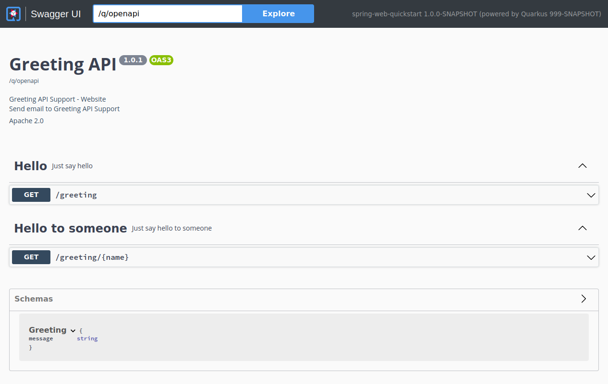

Spring Web APIのためのQuarkus エクステンション
RESTエンドポイントの定義には、Jakarta REST（旧称JAX-RS）アノテーションを使用することが推奨されていますが、Quarkusは、 spring-web エクステンションという形でSpring Webの互換性レイヤーを提供しています。
このガイドでは、よく知られているSpring Webアノテーションを利用して、QuarkusアプリケーションでRESTfulサービスを定義する方法を説明します。
前提条件
このガイドを完成させるには、以下が必要です:
このガイドを完成させるには、以下が必要です:
-
約15分
-
IDE
-
JDK 17+がインストールされ、
JAVA_HOMEが適切に設定されていること -
Apache Maven 3.9.12
-
使用したい場合は、 Quarkus CLI
-
ネイティブ実行可能ファイルをビルドしたい場合、MandrelまたはGraalVM（あるいはネイティブなコンテナビルドを使用する場合はDocker）をインストールし、 適切に設定していること
ソリューション
次の章で紹介する手順に沿って、ステップを踏んでアプリを作成することをお勧めします。ただし、完成した例にそのまま進んでも構いません。
Gitレポジトリをクローンするか git clone -b development https://github.com/quarkusio/quarkus-quickstarts.git 、 アーカイブ をダウンロードします。
ソリューションは spring-web-quickstart ディレクトリ にあります。
Mavenプロジェクトの作成
まず、新しいプロジェクトが必要です。以下のコマンドで新規プロジェクトを作成します。
Windowsユーザーの場合:
-
cmdを使用する場合、（バックスラッシュ
\を使用せず、すべてを同じ行に書かないでください）。 -
Powershellを使用する場合は、
-Dパラメータを二重引用符で囲んでください。例:"-DprojectArtifactId=spring-web-quickstart"
このコマンドは、プロジェクトを生成し、 spring-web エクステンションをインポートします。
すでにQuarkusプロジェクトが設定されている場合は、プロジェクトのベースディレクトリで以下のコマンドを実行することで、 spring-web エクステンションをプロジェクトに追加することができます。
quarkus extension add spring-web,rest-jackson./mvnw quarkus:add-extension -Dextensions='spring-web,rest-jackson'./gradlew addExtension --extensions='spring-web,rest-jackson'これにより、 pom.xml に以下が追加されます:
<dependency>
<groupId>io.quarkus</groupId>
<artifactId>quarkus-spring-web</artifactId>
</dependency>
<dependency>
<groupId>io.quarkus</groupId>
<artifactId>quarkus-rest-jackson</artifactId>
</dependency>implementation("io.quarkus:quarkus-spring-web")
implementation("io.quarkus:quarkus-rest-jackson")|
|
GreetingController
RESTエンドポイントを定義するためのSpring Webアノテーションを持つコントローラである src/main/java/org/acme/spring/web/GreetingController.java ファイルを以下のように作成します。
package org.acme.spring.web;
import org.springframework.web.bind.annotation.GetMapping;
import org.springframework.web.bind.annotation.RequestMapping;
import org.springframework.web.bind.annotation.RestController;
@RestController
@RequestMapping("/greeting")
public class GreetingController {
@GetMapping
public String hello() {
return "hello";
}
}GreetingControllerTest
コントローラーのテストも作成されていることに注意してください。
package org.acme.spring.web;
import io.quarkus.test.junit.QuarkusTest;
import org.junit.jupiter.api.Test;
import static io.restassured.RestAssured.given;
import static org.hamcrest.CoreMatchers.is;
@QuarkusTest
public class GreetingControllerTest {
@Test
public void testHelloEndpoint() {
given()
.when().get("/greeting")
.then()
.statusCode(200)
.body(is("hello"));
}
}アプリケーションをパッケージ化して実行する
次のコマンドでアプリケーションを実行します。
quarkus dev./mvnw quarkus:dev./gradlew --console=plain quarkusDevブラウザで http://localhost:8080/greeting を開きます。
結果は {"message": "hello"} のようになります。
アプリケーションをネイティブ実行可能ファイルとして実行する
以下を使用して、ネイティブ実行可能ファイルを生成することができます。
quarkus build --native./mvnw install -Dnative./gradlew build -Dquarkus.native.enabled=trueJSONを返すエンドポイントでその先へ
上の GreetingController は、非常にシンプルなエンドポイントの例でした。しかし、多くの場合、JSONコンテンツを返さなければなりません。次の例では、Spring RestControllerを使用して、これを実現しています。
import org.springframework.web.bind.annotation.GetMapping;
import org.springframework.web.bind.annotation.PathVariable;
import org.springframework.web.bind.annotation.RequestMapping;
import org.springframework.web.bind.annotation.RestController;
@RestController
@RequestMapping("/greeting")
public class GreetingController {
@GetMapping("/{name}")
public Greeting hello(@PathVariable(name = "name") String name) {
return new Greeting("hello " + name);
}
public static class Greeting {
private final String message;
public Greeting(String message) {
this.message = message;
}
public String getMessage(){
return message;
}
}
}対応するテストは次のようになります:
package org.acme.spring.web;
import io.quarkus.test.junit.QuarkusTest;
import org.junit.jupiter.api.Test;
import static io.restassured.RestAssured.given;
import static org.hamcrest.CoreMatchers.is;
@QuarkusTest
public class GreetingControllerTest {
@Test
public void testHelloEndpoint() {
given()
.when().get("/greeting/quarkus")
.then()
.statusCode(200)
.body("message", is("hello quarkus"));
}
}QuarkusでSpring Webサポートを使用する場合、 Jackson は自動的にクラスパスに追加され、適切に設定されることに注意してください。
OpenAPIとSwagger-UIの追加
quarkus-smallrye-openapi エクステンションを使うことで、 OpenAPIと Swagger-UIのサポートを追加することができます。
このコマンドを実行してエクステンションを追加
./mvnw quarkus:add-extension -Dextensions="io.quarkus:quarkus-smallrye-openapi"これにより、 pom.xml に以下が追加されます。
<dependency>
<groupId>io.quarkus</groupId>
<artifactId>quarkus-smallrye-openapi</artifactId>
</dependency>これは、RESTエンドポイントから基本的なOpenAPIスキーマドキュメントを生成するのに十分です。
curl http://localhost:8080/q/openapi生成された OpenAPI スキーマドキュメントが表示されます。
---
openapi: 3.0.1
info:
title: Generated API
version: "1.0"
paths:
/greeting:
get:
responses:
"200":
description: OK
content:
'*/*':
schema:
type: string
/greeting/{name}:
get:
parameters:
- name: name
in: path
required: true
schema:
type: string
responses:
"200":
description: OK
content:
'application/json':
schema:
$ref: '#/components/schemas/Greeting'
components:
schemas:
Greeting:
type: object
properties:
message:
type: stringOpenAPI ガイド も参照してください。
MicroProfile OpenAPIアノテーションの追加
MicroProfile OpenAPIを使用して、スキーマをより良く文書化することができます。例えば、 GreetingController のクラスレベルに以下を追加します:
@OpenAPIDefinition(
info = @Info(
title="Greeting API",
version = "1.0.1",
contact = @Contact(
name = "Greeting API Support",
url = "http://exampleurl.com/contact",
email = "techsupport@example.com"),
license = @License(
name = "Apache 2.0",
url = "https://www.apache.org/licenses/LICENSE-2.0.html"))
)そして、エンドポイントをこのように記述します:
@Tag(name = "Hello", description = "Just say hello")
@GetMapping(produces=MediaType.TEXT_PLAIN_VALUE)
public String hello() {
return "hello";
}
@GetMapping(value = "/{name}", produces=MediaType.APPLICATION_JSON_VALUE)
@Tag(name = "Hello to someone", description = "Just say hello to someone")
public Greeting hello(@PathVariable(name = "name") String name) {
return new Greeting("hello " + name);
}これにより、このOpenAPIスキーマが生成されます。
---
openapi: 3.0.1
info:
title: Greeting API
contact:
name: Greeting API Support
url: http://exampleurl.com/contact
email: techsupport@example.com
license:
name: Apache 2.0
url: https://www.apache.org/licenses/LICENSE-2.0.html
version: 1.0.1
tags:
- name: Hello
description: Just say hello
- name: Hello to someone
description: Just say hello to someone
paths:
/greeting:
get:
tags:
- Hello
responses:
"200":
description: OK
content:
'*/*':
schema:
type: string
/greeting/{name}:
get:
tags:
- Hello to someone
parameters:
- name: name
in: path
required: true
schema:
type: string
responses:
"200":
description: OK
content:
'*/*':
schema:
$ref: '#/components/schemas/Greeting'
components:
schemas:
Greeting:
type: object
properties:
message:
type: stringSwagger UIの使用
Swagger UIは、 Dev または Test モードで実行するとデフォルトで含まれており、オプションで Prod モードに追加することができます。詳細は Swagger UI ガイドをご覧ください。
localhost:8080/q/swagger-ui/ に移動すると、Swagger UIの画面が表示されます。

サポートされているSpring Webの機能
Quarkusは現在、Spring Webが提供する機能のサブセットをサポートしています。具体的には、QuarkusはSpring WebのREST関連の機能をサポートしています（ @Controller の代わりに @RestController を考えてみてください）。
アノテーション
下の表は、サポートされているアノテーションをまとめたものです。
| 名前 | Comments |
|---|---|
@RestController |
|
@RequestMapping |
|
@GetMapping |
|
@PostMapping |
|
@PutMapping |
|
@DeleteMapping |
|
@PatchMapping |
|
@RequestParam |
|
@RequestHeader |
|
@MatrixVariable |
|
@PathVariable |
|
@CookieValue |
|
@RequestBody |
|
@ResponseStatus |
|
@ExceptionHandler |
コントローラごとではなく、@RestControllerAdviceクラスでのみ使用可能です。 |
@RestControllerAdvice |
サポートされているのは@ExceptionHandlerケイパビリティのみです。 |
コントローラメソッドの戻り値の型
以下のメソッドの戻り値の型がサポートされています。
-
プリミティブ型
-
文字列 (リテラルとして使用されます。Spring MVC ビューのサポートはありません)
-
JSON 経由でシリアライズされる POJO クラス
-
org.springframework.http.ResponseEntity
コントローラメソッドのパラメーターの型
前の表にある適切なSpring Webアノテーションでアノテーションできるメソッドパラメータに加えて、 jakarta.servlet.http.HttpServletRequest と jakarta.servlet.http.HttpServletResponse もサポートされています。ただし、これを機能させるためには、 quarkus-undertow の依存関係を追加する必要があります。
⚠️ Important: These types are only available when using the Classic RESTEasy stack (quarkus-resteasy / quarkus-resteasy-jackson) because they rely on the Servlet API provided by Undertow (quarkus-undertow).
If your application uses the Reactive stack (quarkus-rest / quarkus-rest-jackson), then the Servlet API is not supported. In this case, adding the quarkus-undertow dependency will not enable servlet injection and will result in runtime errors.
例外ハンドラーメソッドの戻り値の型
以下のメソッドの戻り値の型がサポートされています。
-
org.springframework.http.ResponseEntity -
java.util.Map
Spring ExceptionHandler javadoc に記載されているその他の戻り値型はサポートされていません。
例外ハンドラーメソッドのパラメーターの型
以下のパラメーターの型がサポートされています（順不同）:
-
例外の引数：一般的な
Exceptionとして、またはより具体的な例外として宣言されています。これは、アノテーション自体がvalue()を使って例外の型を狭めていない場合、マッピングのヒントにもなります。 -
リクエストおよび／またはレスポンスオブジェクト（通常、サーブレットAPIからのもの）。
ServletRequest/HttpServletRequestのように、 特定のリクエスト/レスポンス型を選択することができます。Servlet APIを使用するには、quarkus-undertowの依存関係を追加する必要があります。
Spring ExceptionHandler javadoc に記載されているその他のパラメーターの型はサポートされていません。
Using HttpServerRequest and HttpServerResponse in Spring Web-style exception handlers
When using the Quarkus Spring Web compatibility layer on top of the reactive stack (quarkus-rest-jackson),
you cannot inject servlet-based request and response types such as jakarta.servlet.http.HttpServletRequest or jakarta.servlet.http.HttpServletResponse.
These types are only available when using the Classic RESTEasy stack (quarkus-resteasy / quarkus-resteasy-jackson), which relies on the Servlet API provided by quarkus-undertow dependency.
To provide a Spring-friendly experience while staying reactive, Quarkus allows you to inject the following types into your @ExceptionHandler methods:
-
io.vertx.core.http.HttpServerRequest
-
io.vertx.core.http.HttpServerResponse
These types give you direct access to the underlying Vert.x HTTP layer. This allows you to manipulate the response (e.g. set headers, cookies, or status codes) or enrich the returned information using details from the request.
例えば、以下のようになります:
@ExceptionHandler(IllegalArgumentException.class)
public ResponseEntity<Object> handleException(Exception ex,
HttpServerRequest request,
HttpServerResponse response) {
// Add a custom header to the response
response.putHeader("X-Error-Reason", "IllegalArgument");
// Build a response body enriched with request details
String body = String.format("Request %s %s failed",
request.method().name(),
request.uri());
return new ResponseEntity<>(body, HttpStatus.BAD_REQUEST);
}Warning: This is potentially dangerous. Users should only do this if they understand the reactive model, and are aware that writing directly to the response can bypass normal handling of status codes, headers, and serialization.
重要な技術的な注意点
Quarkus での Spring サポートは、Spring Application Context を開始せず、Spring インフラストラクチャークラスも実行しないことに注意してください。Spring クラスとアノテーションは、メタデータの読み取りにのみ使用されるか、ユーザーコードメソッドの戻り値の型またはパラメーター型として使用されます。エンドユーザーにとってそれが意味することは、任意の Spring ライブラリーを追加しても効果がないということです。さらに、Spring インフラストラクチャークラス (たとえば、 org.springframework.beans.factory.config.BeanPostProcessor など) は実行されません。
変換テーブル
以下の表は、Spring WebのアノテーションをJakarta RESTのアノテーションに変換する方法を示しています。
| Spring | Jakarta REST | Comments |
|---|---|---|
@RestController |
Jakarta RESTには同等のものはありません。クラスを@Pathでアノテーションするので十分です。 |
|
@RequestMapping(path="/api") |
@Path("/api") |
|
@RequestMapping(consumes="application/json") |
@Consumes("application/json") |
|
@RequestMapping(produce="application/json") |
@Produces("application/json") |
|
@RequestParam |
@QueryParam |
|
@PathVariable |
@PathParam |
|
@RequestBody |
Jakarta RESTに同等のものはありません。リクエスト本体に対応するメソッドパラメータは、Jakarta RESTではアノテーションを必要とせずハンドリングされます。 |
|
@RestControllerAdvice |
Jakarta RESTに同等のものはありません。 |
|
@ResponseStatus |
Jakarta RESTに同等のものはありません。 |
|
@ExceptionHandler |
Jakarta RESTには同等のアノテーションはありません。例外の処理には |
その他のSpringガイド
Quarkusには、より多くのSpring互換機能があります。詳細については、以下のガイドを参照してください。